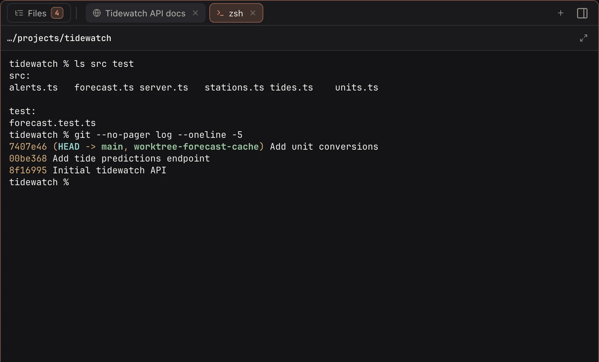

The Workbench
An agent edits files, starts a server, tells you to look at a page. In a plain terminal you open a second window for each of those, and lose track of which belongs to which chat. In Koloft every session tab has a Workbench beside it. The agent's own terminal stays untouched next to it.
The Workbench does not jump around while the agent works. Nothing follows the agent's writes by itself. A file opens when you click it, or when the agent asks for it on purpose (see agents). ⇧⌘B shows or hides it. ⌘⏎ makes it full width and back.
Files ▸ Changes
The files this session touched, each with its diff right there. You read what the agent
did without typing git diff. The base switch shows changes since the branch
started, or only the ones not committed yet.

Files ▸ Browse
The whole folder as a tree. A switch shows the files git ignores too. Once a Claude session writes to its scratchpad (its own folder for working files), that folder shows here too.

File tabs
- Markdown, images and PDF, shown the way they look. An HTML file opens as a web tab.
- the diff, or the plain source
- an editor: ⌘S saves. If the file changed on disk meanwhile, it will not quietly write over it.
Web tabs
A real browser, not a preview. Logins stay, downloads work, popups open, and Chrome
extensions run. When the agent runs open <url>, the page lands as a tab
in the background with an unread dot. It does not pull you away from what you are doing.
The page is not loaded until you click it. Eight tabs per session; a ninth pushes out the
oldest one you have not looked at.

Terminal tabs
While the session is running, ⌃` opens a shell in its folder (up to eight). Run a test or check git there, and leave the agent's terminal to the agent.

The GitHub button
In a GitHub project a GitHub button sits next to Files. Click it to open the branch's pull request in a web tab, or the repo page when there is none yet. Right-click it for more:
- Open repository
- Open pull requests
- Open pull request #… (when there is one)
The note
One plain-text note per folder. Sessions come and go; the note stays.

What it won't do
-
follow the agent's writes(a file opens when you or the agent ask) -
cover the agent's terminal(it sits beside it) -
show a Codex scratchpad(only Claude sessions have one)
next page -> Agents can use Koloft too